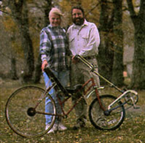
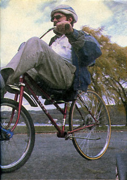
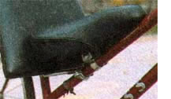
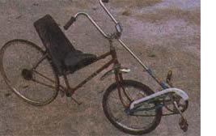

Recumbent Bicycle: A Diy, Low-Cost Project
Here's how to recycle the frame and parts from older bikes to make a recumbent bicycle that's far cheaper than, and just as successful as, commercial models.
By Jeff Setaro
February/March 1999
The beauty of the bicycle has always been in the simplicity and seemingly unchanging perfection of its original design - a design that has changed remarkably little in a hundred years. Truly new bicycle designs are very rare. But one that rethought the design from the ground up was the recumbent bicycle. You've probably seen at least one of these eccentric contraptions whiz by, its rider practically flat on his back. They are stable, fast, and shock the back and stress the midsection far less than traditional bikes. The only fly in the ointment is that they are complicated and start at about $1,200 for a stripped-down model.
When you look at the elaborate design of a manufactured recumbent bicycle, you'd never think you could build a better one, much less build one for almost nothing. Yet that's exactly what Jeff Setaro did. His ingenious idea is beautiful, both in its simplicity and its economy. This is the story of how Jeff came to build his $18 recumbent bicycle. -MOTHER
The Recumbent Bicycle Quest
My search for a low-cost recumbent bicycle began after reading an article on the health problems that conventional bicycle seats can cause. (Recumbent seats pose little or no health risk). I tried different models of commercial recumbents, including the E-Bike, a mountain-style recumbent with shocks, retailing for $1,200. I discovered that the demand for recumbents is still limited - only 3 percent of the market - making the bikes so pricey that they were way out of my budget. Many of the bike shops I visited had barely heard of them.
I am a nontraditional technology major at Buffalo State and will graduate this summer. One thing I learned in school is to problem-solve my way out of anything. Though I had an idea for a recumbent made from a woman's bike frame, I could not figure out how to move the drive train forward to get more legroom. My wife's suggestion - that I try some kind of front-wheel drive - set the gears in motion.
My initial attitude was that front-wheel drive was fine for tricycles, but that it couldn't get a two-wheeler moving fast enough in direct-drive mode. It also seemed that steering would be impossible or at least hindered, with your legs on the front wheel. Somehow, I got the notion that if you took the back end of a kid's bike and stuck it on the front end of an adult bike, you could pedal normally and avoid the long chain to the rear wheel that is used by many commercial recumbents.
Recumbent Bicycle Parts and Building
I already had a used woman's bike frame and went to search the thrift shops for a kid's bike. I found a nice blue one with three speeds and a coaster brake - the kind you pedal backwards to activate what is actually a drum brake inside the rear hub around the axle. With a hacksaw, I cut off the whole front of the kid's bike frame as well as the seat stays (the two tubes that connect the top of the seat post to the rear axle) so that all that was left was the V formed by the rear wheel, the bottom bracket (including pedals, cranks, chainrings and chain), and the seat tube.
I then removed the front wheel of the woman's bike and replaced it with the rear wheel of the kid's bike. I had to widen the fork a little to allow the rear wheel to fit (but not enough to weaken it). It was a little tricky spreading the fork and bolting it at the same time. I also removed the pedals, cranks, cassette and chain from the woman's frame.
Next, I extended the seat post of the kid's bike to reach the handlebar stem of the woman's bike. You may need to find an extra-long seat post to make it reach. Make sure you have the right diameter; they come in many sizes. I then attached the seat post to the stem with the hardware from the kid's seat. I had to get a longer bolt to make this work. This connection would work better with some kind of Y-shaped adapter, since my solution left the handlebars (not the wheel) turned about 5 degrees from dead center.
I found I could use a long, tapered padded seat back (from a discarded chair), but I still needed a seat. As if on cue, I soon found an old exercise bike for $6.95 that had a nice, padded, extra-large seat. To attach the seat back to the frame, I used an aluminum bike rack. The bottom of the seat back rests on the sloping top tube of the woman's bike frame. The seat back is inclined 45 degrees and rests against the top of the woman's frame's seat post. It is further supported by the bike rack. The cargo platform of the rack attaches to the back of the seat back with wood screws and U-brackets. The supports of the rack attach to the middle of the woman's frame's seat stays (the tubes that run from the seat to the rear axle). I was able to attach the exercise bicycle seat to the sloping tube of the woman's frame with the existing hardware. I replaced the woman's frame's handlebars with those from the exercise bike, which curved in. With a little grease and oil, voila, one cheap recumbent.
My first test ride was out in front of my apartment. Fortunately, not many people were around to see my pitiful initial attempts. I wove back and forth, nearly hitting parked cars on both sides of the street. I realized only later that you need a slight running start, a la Fred Flintstone, to get stable. Pedaling pushed the wheel one way, then the other. I wove down the street in disappointment. But after five minutes of this, I found that if I applied pressure to the opposing side of the handlebars, I could compensate for the force exerted by my legs. My arms tired of this after awhile, however. My wife saved the day again when she discovered that holding the outsides of the bars gave her a steadier ride. So the next day we went out again to the thrift stores and found a highrise handlebar with grips facing outward. This change made all the difference. I became confident enough to ride in traffic and experienced my first shocked looks. Kids chased me down the street, pointing.
We took the bike to our favorite bike path, my wife following me on a normal ten-speed. She got to see the surprised reactions and hear the admiring comments such as, "Very innovative!" and "Did you make that?"
We found that going up hills - the ones along the Niagara River where we ride are barely molehills - on a recumbent uses different muscles than a normal bike. You can't get up over the pedals, so you just shift down and go more slowly. I am looking into using a kid's ten-speed on my next conversion. But what a pleasure to sit back and cruise as if I were sitting in a favorite lawn chair! No numbness or soreness! The coaster brake up front is so powerful, even in wet conditions, that I removed the rear hand brake. You might want to keep these as a backup, for more balanced braking in emergency situations, or in case your feet slip off the pedals.
The front of the bike is a little heavy since the kid's frame is made of steel. Using a kid's bike with an aluminum frame would lighten it up considerably. The reach to the pedal can be adjusted by extending or retracting the seat post of the kid's frame. I need to get a slightly longer handlebar stem for the woman's frame, since my knees just touch the bars when I pedal.
I'm thrilled that I didn't have to weld anything or drill a single hole. All I needed was a hacksaw! For about $18, I have a bike that I find rides better than the $1,200 professional models I tried.
|
 PHOTO: JON REISS/PHOTOLINK Enjoy longer, more comfortable rides with a recumbent bicycle, and save your back from the usual discomfort of riding a standard bike. |
 PHOTO: JON REISS/PHOTOLINK You'll love the riding position and large seat back of this DIY recumbent bicycle. |
 PHOTO: JON REISS/PHOTOLINK The padded back from an old chair paired with the seat from an exercise bicycle make a sturdy, comfortable recumbent bicycle seat. |
 PHOTO: JON REISS/PHOTOLINK Three speeds and a drum brake might be simple, but they work like a dream. |
 PHOTO: JON REISS/PHOTOLINK By putting the back end of a child's bicycle on the front of an adult bike, you can avoid the long chain to the rear wheel that is common on commercial recumbent bikes. |
|